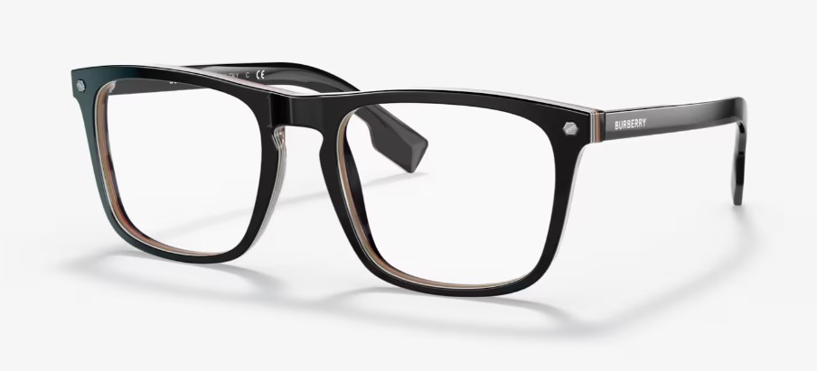

Lentes Ray-ban
Los lentes Ray-Ban son un ícono de estilo y calidad. Cada par de lentes Ray-Ban está diseñado
con un enfoque en la comodidad, la durabilidad y, por supuesto, el estilo1. Los lentes Ray-Ban
vienen en una variedad de estilos y colores, desde los clásicos aviadores hasta los modernos
wayfarer1.Una característica destacada de los lentes Ray-Ban es su construcción de alta
calidad. Cada par de lentes Ray-Ban está hecho con materiales de primera calidad, lo que
garantiza un ajuste cómodo y una larga durabilidad1.Además, los lentes Ray-Ban ofrecen una
excelente protección contra los rayos UV, lo que los hace perfectos para cualquier actividad
al aire libre1. Con lentes polarizados disponibles en ciertos estilos, puedes estar seguro de
que tus ojos estarán protegidos sin importar las condiciones de luz1 Así que, si estás
buscando unos lentes que sean versátiles, duraderos y siempre a la moda, no busques más
allá de los lentes Ray-Ban. Ya sea que estés yendo a la playa, a una caminata o
simplemente buscando el complemento perfecto para tu atuendo casual, unos lentes Ray-Ban
son la elección perfecta para ti. ¡Hazte con tus lentes Ray-Ban hoy mismo

Lentes Burberry
Los lentes Burberry BE2340 Bolton son una expresión de elegancia y estilo británico icónico. Con su diseño clásico y
sofisticado, estos lentes de montura completa ofrecen una combinación perfecta de moda y funcionalidad. Fabricados con
materiales de alta calidad, proporcionan durabilidad y comodidad durante todo el día.
El modelo BE2340 presenta una montura rectangular moderna con detalles distintivos de Burberry, como el emblemático
patrón de cuadros en las varillas. Estos lentes están disponibles en una variedad de colores y acabados, lo que permite
a cada persona encontrar el estilo que se adapte a su personalidad y gusto.
Además de su atractivo estético, los lentes Burberry BE2340 Bolton también ofrecen una excelente protección visual.
Pueden ser utilizados tanto para mejorar la visión como para complementar el estilo de vida de quien los use. Ya sea en
el trabajo, en un evento social o en actividades al aire libre, estos lentes son una elección elegante y práctica para
cualquier ocasión.

Lentes Lacoste L2767
Los lentes Lacoste L2767 son una muestra de elegancia y estilo francés contemporáneo. Con su diseño refinado y detalles
distintivos, estos lentes de montura completa son una elección sofisticada para aquellos que buscan un equilibrio entre
moda y funcionalidad.
Fabricados con materiales de alta calidad, los L2767 ofrecen durabilidad y comodidad, mientras que su estilo atemporal
los hace versátiles para cualquier ocasión. Presentan una montura rectangular con el icónico logo de Lacoste en las
varillas, lo que añade un toque de sofisticación y autenticidad a la vez.
Ya sea para el trabajo, para una salida casual o para eventos más formales, los lentes Lacoste L2767 son una declaración
de estilo que complementará cualquier conjunto con un toque de refinamiento y distinción.